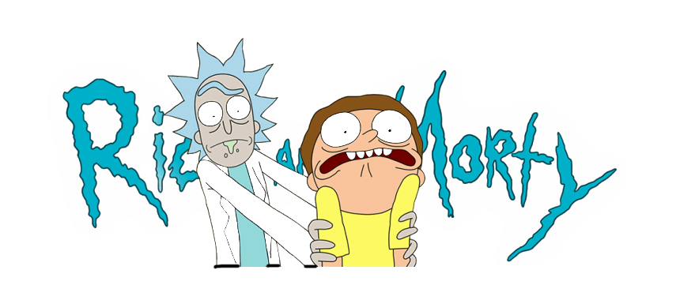

This is a bunch of text on my page.
That's Right Morty! This is gonna be a lot like that. Except you know. It's gonna make sense. You have to turn them on Morty! The shoes need to be turned on! You don't get to tell me what to look at. I've seen your Pornhub account. Also, who makes a Pornhub account?
Really, you're gonna pull that move? I guided your entire civilisation. Your people have a holiday named ricksgiving. They teach kids about me in school. Where are my testicles, Summer? Oh god, oh, I blame myself. Oh, what a tragedy. Oh, well, he's bones now. I guess all debts are paid.
Existence is pain to a meeseeks Jerry, and we will do anything to alleviate that pain. Oh boy, so you actually learned something today? What is this? Full House? I was living in the moment all day, and it kept getting me killed by Nazis. I think you need to think ahead and live in the moment. Morty, I'm a drunk, not a hack.